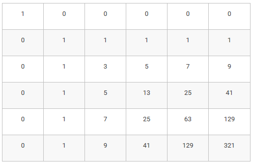

Приклади
| Pi\w | 0 | 1 | 2 | 3 | 4 | 5 | 6 | 7 | 8 | 9 | 10 |
|---|---|---|---|---|---|---|---|---|---|---|---|
| 1 | 1 | 1 | 1 | 1 | 1 | 1 | 1 | 1 | 1 | 1 | 1 |
| 2 | 1 | ||||||||||
| 5 | 1 | ||||||||||
| 10 | 1 |
| Pi\w | 0 | 1 | 2 | 3 | 4 | 5 | 6 | 7 | 8 | 9 | 10 |
|---|---|---|---|---|---|---|---|---|---|---|---|
| 1 | 1 | 1 | 1 | 1 | 1 | 1 | 1 | 1 | 1 | 1 | 1 |
| 2 | 1 | 1 | 2 | 2 | 3 | 3 | 4 | 4 | 5 | 5 | 6 |
| 5 | 1 | 1 | 2 | 2 | 3 | 4 | 5 | 6 | 7 | 8 | 10 |
| 10 | 1 | 1 | 2 | 2 | 3 | 4 | 5 | 6 | 7 | 8 | 11 |
Сопоставим каждой клетке ее координаты (i,j), где i будет обозначать номер строки на доске, j — номер столбца. Нумеровать строки будем сверху вниз, столбцы — слева направо, нумерация начинается с 0. Тогда начальное положение короля будет клетка (0,0).
Обозначим через F(i,j) количество способов прийти из клетки (0,0) в клетку (i,j). В клетку (i,j) можно прийти из трех клеток — слева из (i,j−1), сверху из (i−1,j) и по диагонали из (i−1,j−1). Поэтому число маршрутов ведущих в клетку равно числу маршрутов из всех ее предшественников, а именно:
F(i,j)=F(i,j−1)+F(i−1,j)+F(i−1,j−1)
Отдельно нужно задать значения для граничных клеток, то есть когда i=0 или j=0. В результате
получится таблица заполненная следующим образом:
Для заполнения этой таблицы и подсчета числа маршрутов можно использовать следующую программу, в которой сначала создается двумерный список, затем заполняются крайние клетки (первый столбец и первая строка), затем заполняются остальные элементы таблицы при помощи приведенного выше рекуррентного соотношения. В данном примере n - число строк, m - число столбцов на доске.
F = [[0] * m for i in range(n)]
for i in range(n):
F[i][0] = 1
for j in range(m):
F[0][j] = 1
for i in range(1, n):
for j in range(1, m):
F[i][j] = F[i][j - 1] + F[i - 1][j] + F[i - 1][j - 1]
На этом примере можно составить общий план решения задачи методом динамического программирования.
Этот план можно использовать для решения любых задач при помощи динамического программирования:- Записать то, что требуется найти в задаче, как целевую функцию от некоторого набора аргументов (числовых, строковых или еще каких-либо).
- Свести решение задачи для произвольного набора параметров к решению аналогичных подзадач для других наборов параметров (как правило, с меньшими значениями параметров). Если задача несложная, то полезно бывает выписать явное рекуррентное соотношение, задающее значение функции для данного набора параметров.
- Задать начальные значения функции, то есть те наборы аргументов, при которых задача тривиальна и можно явно указать значение функции.
- Создать массив (или другую структуру данных) для хранения значений функции. Как правило, если функция зависит от одного целочисленного параметра, то используется одномерный массив, для функции от двух целочисленных параметров — двумерный массив и т. д.
- Организовать заполнение массива с начальных значений, определяя очередной элемент массива при помощи выписанного на шаге 2 рекуррентного соотношения или алгоритма.
Для того, чтобы значения в остальной таблице вычислялись по общим формулам, во все клетки каемочки нужно записать число 0, кроме клетки (0,0), в которую будет записано значение 1:

Теперь во всех остальных клетках таблицы значения могут быть вычислены по общей формуле: F(i,j)=F(i,j−1)+F(i−1,j)+F(i−1,j−1), а программа может выглядеть так:
F = [[0] * (m + 1) for i in range(n + 1)]
F[0][0] = 1
for i in range(1, n + 1):
for j in range(1, m + 1):
F[i][j] = F[i][j - 1] + F[i - 1][j] + F[i - 1][j — 1]
Послідовність чисел b1, b2, ..., bm називається бітонічною, якщо існує таке число j (1< j < m), що виконуються нерівності b1 < b2 < ... < bj > bj+1 > ... > bm. Відмітимо, що у відповідності з цим визначенням, бітонічна послідовність повинна містити хоча б три елементи.
Нехай задано деяку послідовність чисел a1, a2, ..., an. Її підпослідовністю називається послідовність наступного виду: ai1, ai2, ..., aik
При цьому для чисел i1, ..., ik повинні виконуватись нерівності 1 ≤ i1 ≤ i2 ≤ ... ≤ ik ≤ n.
Задача полягає у тому, щоб написати програму, яка знайде бітонічну підпослідовність заданої послідовності, для якої максимальна сума цифр чисел, що входять до неї. При цьому припускається, що числа записано у десятковій системі числення.
Алгоритм Беллмана—Форда - алгоритм пошуку найкоротшого шляху в зваженому графі. Знаходить найкоротші шляхи від однієї вершини графа до всіх інших. На відміну від алгоритму Дейкстри, алгоритм Беллмана—Форда допускає ребра з негативною вагою. Запропоновано незалежно Річардом Беллманом і Лестером Фордом.
Історія Алгоритм носить ім'я двох американських вчених: Річарда Беллмана (Richard Bellman) і Лестера Форда (Lester Ford). Форд фактично винайшов цей алгоритм в 1956 році при вивченні іншої математичної задачі, підзадача якої звелася до пошуку найкоротшого шляху в графі, і Форд зробив начерк остаточного вирішення завдання цього алгоритма. Беллман в 1958 р. опублікував статтю, присвячену конкретно завданню знаходження найкоротшого шляху, і в цій статті він чітко сформулював алгоритм у тому вигляді, в якому він відомий нам зараз.
Алгоритм маршрутизації RIP (алгоритм Беллмана - Форда) був вперше розроблений в 1969 році, як основний для мережі ARPANET.
Формулювання задачіДано орієнтований або неорієнтований граф G(V, E) з ваговою функцією w:E\to \mathbb{R}. Вагою w(p) шляху p=\langle v_0, v_1, \dots, v_k \rangle назвемо суму ваг ребер, що входять в цей шлях: w(p)=\sum_{i=1}^k w(v_{i-1}, v_i).
Вхідними даними для алгоритму є граф G, вагова функція w, та стартова вершина s. Потрібно знайти найкоротші шляхи від вершини s до всіх вершин графа. Алгоритм Беллмана-Форда повертає логічне значення, яке вказує на те, чи міститься в графі цикл з негативною вагою, досяжний з витоку. Якщо такий цикл існує у графі G, алгоритм повідомляє, що найкоротших шляхів не існує. Якщо ж таких циклів немає, алгоритм видає найкоротші шляхи і їх вагу.
Сам алгоритм Форда-Беллмана представляє з себе кілька фаз. На кожній фазі проглядаються всі ребра графа, і алгоритм намагається справити релаксацію (relax, ослаблення) уздовж кожного ребра (u,v) ваги w(u,v). Релаксація вздовж ребра — це спроба поліпшити значення v.d значенням v.u+w(u,v) . Фактично це означає, що ми намагаємося поліпшити значення для вершини v, користуючись ребром (u,v) і поточним значенням для вершини u . Стверджується, що достатньо |G.V|-1 фази алгоритму, щоб коректно порахувати довжини всіх найкоротших шляхів у графі (цикли негативної ваги відсутні). Для недосяжних вершин відстань v.d залишиться нескінченністю.
Псевдокод
// Ініціалізація
для кожної вершини v \in G.V
v.d = \infty
v.\pi = NIL
s.d = 0
// Основна частина
для i = 1 до |G.V| - 1
для кожного ребра (u,v) \i G.E
якщо v.d > u.d + w(u, v)
v.d = u.d + w(u, v)
w.\pi = u // зберігаємо попередню вершину
// Перевірка на наявність циклів з від'ємною вагою
для кожного ребра (u,v) \in G.E
якщо v.d > u.d + w(u, v)
повернути ХИБА
повернути ІСТИНА
Оцінка складності Якщо граф заданий списком ребер: ініціалізація потребує O(V) часу, кожен з |V| - 1 проходів потребує O(E) часу, прохід по усім ребрам для перевірки наявності негативного циклу займає O(E) часу. Отже алгоритм працює за O(VE) часу.
Якщо граф заданий матрицею суміжності, то алгоритм буде виконуватись за O(E^3) часу.
Тоді цільова функція задачі буде дорівнювати:
F_i (Z_1 )=min〖(-t_z+R+C_1+F_(i+1) (1)),(C_(z+1)+F_(i+1) (Z+1))〗
При цьому F_i (Z_n )= -S_i
Таким чином, можна отримати відповідь на питання коли краще продати майно, та вигідніше купити нове.